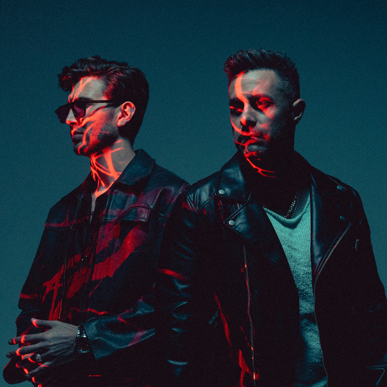
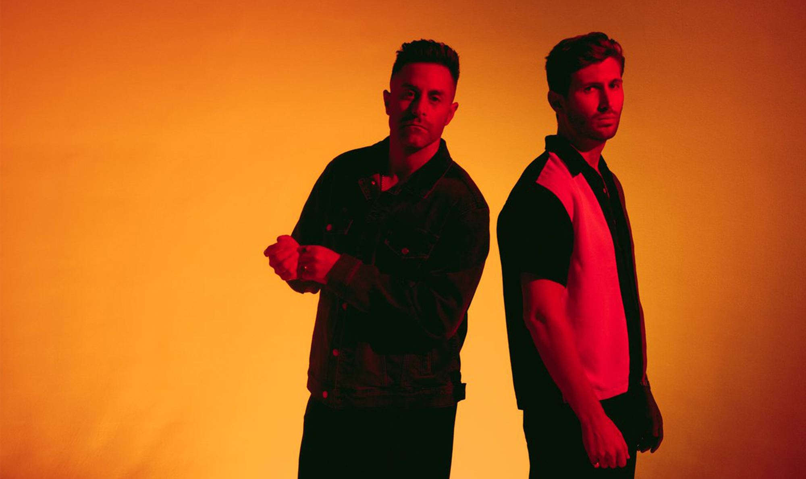

The Score


La música de The Score siempre ha tratado sobre la superación de la adversidad y la búsqueda de la fuerza para sobreponerse en momentos de debilidad, lo que ha ayudado al dúo de Los Ángeles formado por Eddie Anthony (voz/guitarra) y Edan Dover (teclados/producción) a ganar fans en todo el mundo. Un viaje de siete años ha llevado al dúo desde un pequeño apartamento en el Upper East Side de Nueva York hasta placas de oro, casi cinco mil millones de streams, más de un millón de suscriptores de YouTube, cientos de sincronizaciones de televisión y cine, y conciertos con entradas agotadas en múltiples continentes.